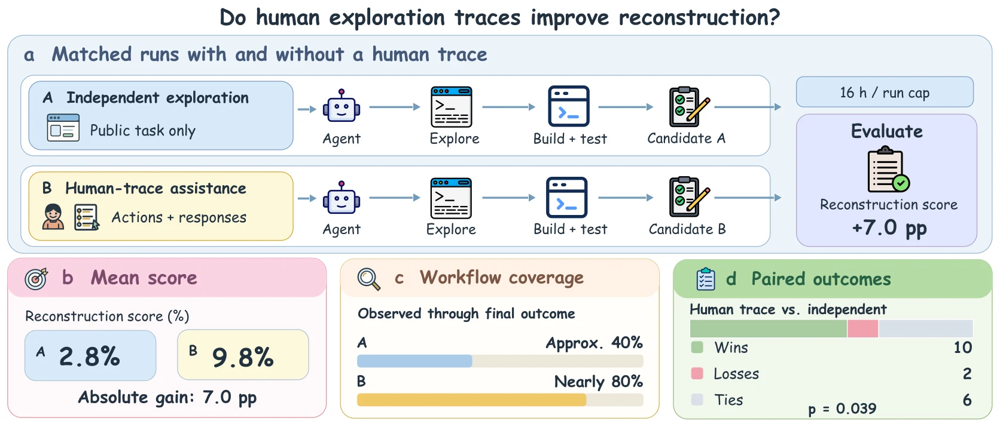
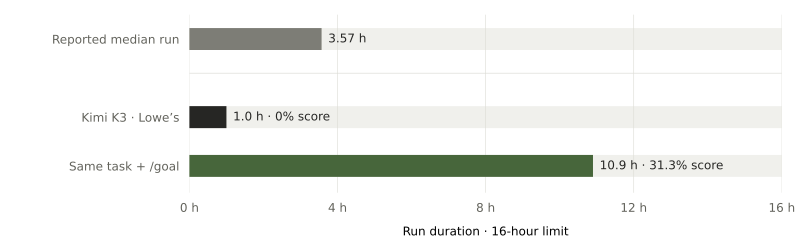
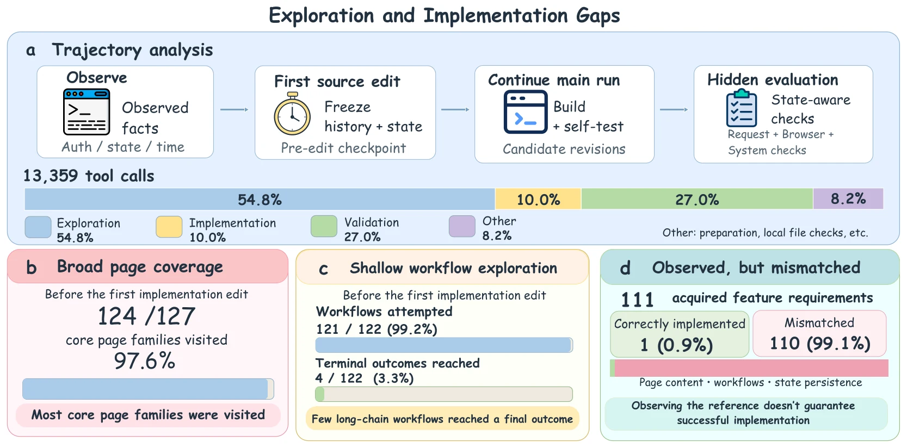

Analysis
Human trajectory
Grok 4.6 · 18 paired websites
A human exploration trace raises the mean reconstruction score from 2.8% to 9.8%.

Early stopping
16-hour limit · one stop-review case
The reported median run ends after 3.57 of 16 hours.

/goal stop review raises the score from 0% to 31.3%. This is a single-case result.Exploration + implementation
Grok 4.6 · 20 websites
Before the first code edit, agents visit 124 of 127 core page families but reach only 4 of 122 workflow outcomes.

Evaluation
| Request | HTTP responses and form submissions. |
|---|---|
| Browser | Appearance, user journeys, and persistent state. |
| System | Offline builds, health, and restarts. |
Results to verify
| Final runs | One explicit run per task and model; exclude context and ablation variants. |
|---|---|
| Accuracy | Use the reporting metric and aggregation rule. Table, Pareto and Waffle use the same canonical HF selection; coverage is shown. |
| Coverage | The active 70-task cohort; missing results stay distinct from measured zero scores. |
| Resources | Cost, tokens, and turns from the same final runs and budget. |
Citation
BibTeX
@misc{websitebench2026,
title = {WebsiteBench: Can AI Agents Rebuild Websites through Browser Exploration?},
author = {Anonymous},
year = {2026},
url = {https://websitebench.github.io/}
}